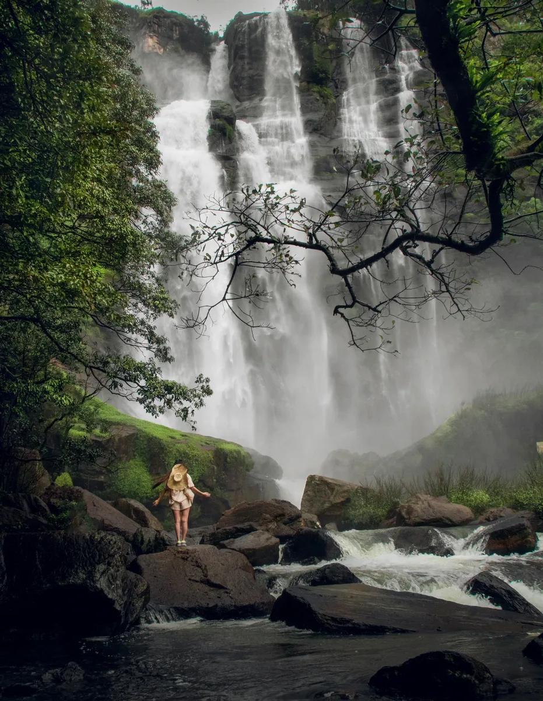

Ella to Nuwara Eliya — Scenic Tea Route by Motorcycle
Riding a motorbike from Ella to Nuwara Eliya is one of Sri Lanka’s most unforgettable adventures, combining raw mountain beauty, misty tea country, and a sense of freedom unique to the island’s highlands. Not only does this route promise winding roads and stunning viewpoints, but every kilometer is packed with authentic local experiences to inspire any traveler to mount their bike and embark on an epic journey (see TerraXplor, ROFI, and RideOnSriLanka).
Planning Your Highland Expedition
The Ella to Nuwara Eliya route spans about 60 km and is best experienced over a half or full day, depending on how many stops you’d like to make along the way. Set out early to avoid the region’s frequent afternoon rain and to make the most of the cool, mist-cloaked mornings. A valid driving license and international permit are essential, along with an endorsed permit from the Automobile Association of Ceylon—vital for any tourist rider in Sri Lanka (see RideOnSriLanka, Traveling, and TerraXplor).
Route Overview: Google Maps Guide
- Starting Point: Ella
Pin: Ella, Badulla District - Destination: Nuwara Eliya
Pin: Nuwara Eliya, Central Province
Ideal riding route via Google Maps:
Take the A23 (Ella–Nuwara Eliya Road), which passes through lush valleys and tea estates—set your navigation to “Nuwara Eliya” and select the route that goes through “Bandarawela–Haputale–Pattipola–Ambewela” for the best scenery (see Facebook route discussion).
Must-See Stops and Detours
- Ella Town: Famous for the Nine Arch Bridge and Ella Rock; fuel up with breakfast at one of the local cafés.
- Ravana Falls: Just out of Ella, this powerful waterfall is a popular first stop. Pin: Ravana Falls
- Bandarawela: A charming market town known for fresh produce and colonial tea bungalows—an excellent spot for a short break.
- Haputale / Tea Estates: Home to Lipton's Seat viewpoint; take in panoramic vistas over green hills. Pin: Lipton's Seat
- St. Benedict’s Monastery, Adisham: A hidden gem for architecture and serenity.
- Pattipola / Ohiya: This stretch brings the highest railway station in Sri Lanka and fog-wrapped views.
- Ambewela Dairy Farm: Known as “Little New Zealand”—try fresh milk and cheese with a view. Pin: Ambewela Farm
- Horton Plains National Park (optional): Famous for the World's End viewpoint and Baker's Falls; a 1-hour detour but well worth it for keen hikers.
- Gregory Lake, Nuwara Eliya: Once in Nuwara Eliya, relax by the British-style lakefront or stroll through the manicured parks.
Riding Conditions & Safety
Expect winding mountain roads with sharp hairpin bends, scenic drop-offs, and occasional livestock crossings. Traffic varies—tourist minibuses and tuk-tuks can be aggressive, so stay alert and allow buses plenty of space. Weather is unpredictable; rain gear and layered clothing are essential for comfort as the climate gets chilly near Nuwara Eliya (see TerraXplor and RideOnSriLanka).
Fuel is available in Bandarawela and Haputale but top up before ascending to higher elevations where stations are rarer. Local stalls offer hot tea and snacks throughout—don’t miss a cup of fresh Ceylon tea as a reward for your ride (see RideOnSriLanka).
Accommodation & Cultural Highlights
Stay at a cozy guesthouse or farmhouse along the route, especially in Nuwara Eliya, where colonial architecture and cool climates evoke “Little England” vibes. Highlights in Nuwara Eliya include:
- The historic Post Office (Red Building)
- The Victorian-style Grand Hotel
- Horse racing and golf courses
- Botanical gardens and waterfalls
Be mindful of local etiquette near temples and religious sites: dress modestly, and ask before photographing people. English is widely spoken but learning “Ayubowan” (hello) and “Stuti” (thank you) will earn smiles from locals (see RideOnSriLanka).
Adventure Essentials
- Valid license and permit with AAC endorsement
- Rain jacket, warm layers, sturdy riding boots
- Power adapter, snacks, and water bottle
- Mobile SIM card for navigation and emergencies (Dialog recommended)
- Backup Google Map links for key stops
Sample Google Map Pins for Main Stops
| Stop | Map Link |
|---|---|
| Ella | Ella |
| Ravana Falls | Ravana Falls |
| Bandarawela | Bandarawela |
| Lipton's Seat | Lipton's Seat |
| Ambewela Farm | Ambewela Farm |
| Gregory Lake | Gregory Lake |
| Nuwara Eliya | Nuwara Eliya |
Feeling the Adventure
Every twist on the road from Ella to Nuwara Eliya feels like a discovery—plunging waterfalls, emerald tea valleys, and encounters with friendly villagers or fellow bikers sharing their favorite stops. Push through the mist as you ascend, challenge yourself on dramatic bends, and take a break with the freshest tea on earth, all while making memories in Sri Lanka’s wildest mountain heartland (see ROFI, TerraXplor, and RideOnSriLanka).
Whether you’re a solo explorer or riding with friends, this route offers a bucket-list adventure. Mark your Google Map, prep your gear, and get ready to write your own bike story among the clouds! Make this journey and you’ll redefine what freedom feels like—one winding hill at a time.